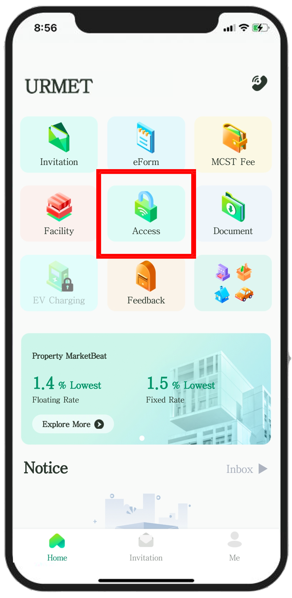
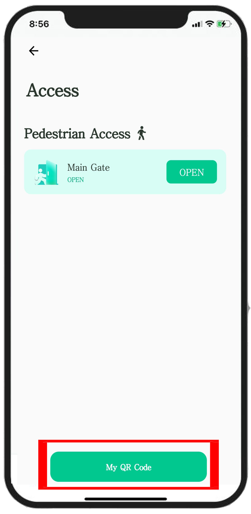

A seamless way to manage your home access via the URMET PLUS mobile application.

Open the URMET PLUS app and tap the Access button to initiate the entry process.

Select the My QR Code button. Your encrypted, dynamic access code will appear on your screen immediately.

Hold your phone towards the Multi-Reader at the gate. The reader will scan the code and open the gate for you.